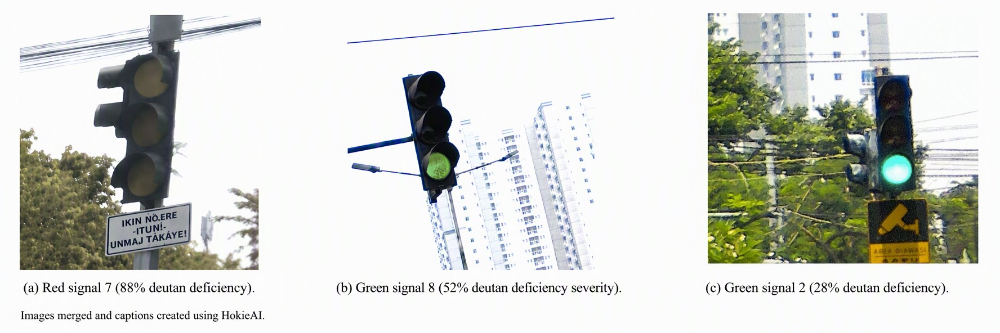
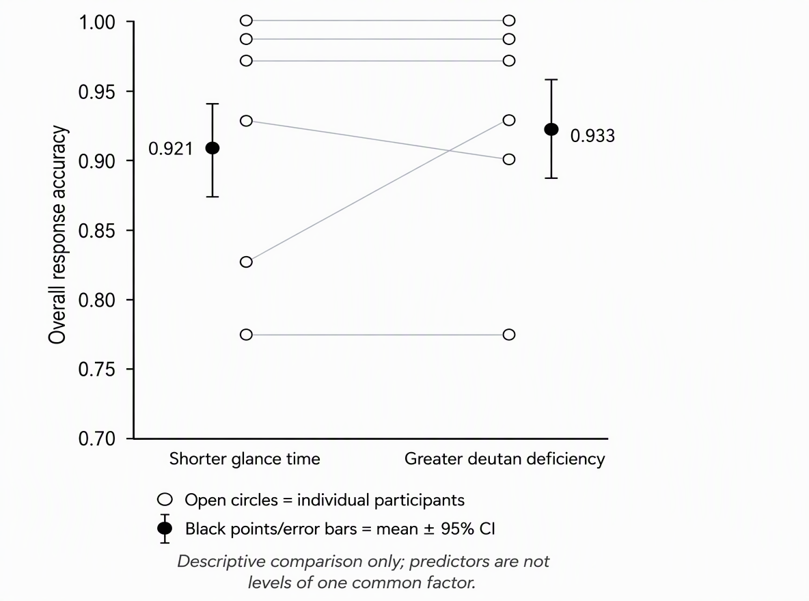

The Problem
Accurately detecting traffic signals is essential to safe driving. Drivers constantly scan for signals such as pedestrians, sirens, and traffic lights, and each one comes down to "signal present" or "signal absent." Two factors can disrupt that process. Color vision deficiency (CVD) is one: deutan CVD weakens or removes the eye's green-sensing cones, so reds look more yellow and greens look more gray. Distracted driving is the other: it shortens on-road glances and makes visual scanning more random, which raises accident risk.
The effects of distraction may be more severe for drivers with CVD. We designed a non-immersive driving simulation to test whether simulated deutan deficiency severity and shortened glance time reduce how accurately people respond to traffic signals.
The completed study used two independent experimental conditions. In the glance-time condition, simulated deutan deficiency was held at 50% while signal duration varied from 200 to 516.7 ms. In the deutan-deficiency condition, signal duration was held at 350 ms while simulated severity varied from 24% to 100%.
Practical application: Data collected from this experiment can inform machine learning models embedded in automotive systems, enabling better accessibility features for CVD drivers and safety interventions for distracted drivers.
What We Set Out to Answer
RQ1 — Deutan Deficiency
Does increasing simulated deutan deficiency severity reduce the proportion of correct traffic-signal responses?
RQ2 — Glance Time
Does increasing signal glance time from 200 ms to 516.7 ms improve the proportion of correct traffic-signal responses?
Null Hypothesis (H₀₁)
Deutan deficiency severity will not be significantly related to response accuracy.
Null Hypothesis (H₀₂)
Glance time will not be significantly related to response accuracy.
Alternative Hypothesis (H₁₁)
Increasing deutan deficiency severity will reduce response accuracy.
Alternative Hypothesis (H₁₂)
Shorter glance times will reduce response accuracy.
Two Independent Conditions
| Condition | Independent Variable | Held Constant | Stimuli Per Condition |
|---|---|---|---|
| Condition 1 | Glance time (200–516.7 ms) | 50% simulated deutan deficiency | 40 trials: 20 red + 20 green |
| Condition 2 | Deutan deficiency severity (24–100%) | 350 ms glance time | 40 trials: 20 red + 20 green |
Dependent variable: proportion of participants who responded correctly on each trial. Red signals were classified as signal present (Brake) and green signals as signal absent (Go).
Participants, Stimuli & Procedure
Participants
Six participants (2 male, 4 female) aged 18–44 took part: three were 18–24, two were 25–34, and one was 35–44. How often they drove varied from never to daily. Five took part for partial course credit and one volunteered. All had normal or corrected vision and no CVD. Demographics were collected with a Qualtrics survey at the end of the session.
Stimuli
Earlier studies tested drivers who have CVD. We instead simulated CVD by changing the stimuli. We chose 10 red and 10 green real-world traffic-signal images from Elk Penguin's Traffic Light Dataset (Ultralytics) and used each one twice in both conditions, for 80 stimuli in total. All images were processed with the RGBlind Color Blindness Simulator.
- Condition 1 (glance time): every signal was set to 50% deutan severity. Duration ranged from 200 ms (12 frames) to 516.7 ms (31 frames) in twenty one-frame (16.7 ms) steps to mimic glances shortened by distractions like texting or rubbernecking.
- Condition 2 (deutan severity): every signal was shown for 350 ms (21 frames). Deutan severity ranged from 24% to 100% in twenty 4% steps.
To control glance time precisely, each image was rendered as its own MP4 clip in DaVinci Resolve at 60 fps and 1920 × 1080. At that frame rate, each added frame lengthens a clip by exactly 16.7 ms. Stimulus order was randomized in both conditions. Four extra images from the same dataset were used for practice trials lasting 200–500 ms.

Sample stimuli: (a) red signal at 88% deutan deficiency, (b) green signal at 52%, and (c) green signal at 28%.
Procedure
The self-paced session took about 10 minutes in an artificially lit classroom. One participant completed it in a dark room. Stimuli were shown in PowerPoint Presenter View on a 2020 M1 MacBook Air at full brightness, and the order of the two conditions was counterbalanced. Participants pressed the right arrow key to start each trial. The signal appeared for its set duration, then cut to black, and participants wrote “G” for Go or “B” for Brake on a response sheet. A break screen separated the two conditions.
Deutan Deficiency Condition — Sample Clips
All 40 trials in the deutan-deficiency condition used a constant glance time of 350 ms. The clips below illustrate representative signal images at different levels of simulated deutan deficiency. Participants responded G (Go) or B (Brake).
Green Signal Stimuli
Red Signal Stimuli
Glance Time Condition — Sample Clips
These samples hold simulated deutan deficiency constant at 50% while varying glance time. The experimental range was 200 to 516.7 ms (12–31 frames at 60 fps). Participants responded G (Go) or B (Brake).
Glance Time Stimuli
Experimental Results
Alternative hypotheses were partially supported. For each trial, the dependent variable was the proportion of participants who responded correctly. Spearman rank-order correlations, run in JASP, tested the relationship between each predictor and response accuracy.
Glance time — all participants
ρ(38) = −.07, p = .651 — No significant relationship; accuracy did not improve as glance time increased from 200 to 516.7 ms.
Glance time — excluding Participant 5b
ρ(38) = −.13, p = .419 — The relationship remained non-significant after excluding Participant 5b.
Deutan deficiency — all participants
ρ(38) = −.55, p < .001 — Greater simulated deutan deficiency severity was associated with lower response accuracy.
Deutan deficiency — excluding Participant 5b
ρ(38) = −.24, p = .134 — The relationship was no longer significant after excluding Participant 5b, who accounted for 18 of 19 Condition 2 misses.
Participant Accuracy by Condition

Figure 1. Overall response accuracy for each participant in Condition 1 (shorter glance time) and Condition 2 (greater deutan deficiency). Open circles are individual participants, with lines connecting the same participant across conditions. Black points and error bars are the mean ± 95% CI. This is a descriptive comparison only; the two predictors are not levels of one common factor.
| Condition | Predictor | Trials (n) | Participants | Spearman rs | p |
|---|---|---|---|---|---|
| 1 | Glance time (ms) | 40 | All 6 | −.07 | .651 |
| 1 | Glance time (ms) | 40 | Excluding 5b | −.13 | .419 |
| 2 | Deutan deficiency (%) | 40 | All 6 | −.55 | < .001 |
| 2 | Deutan deficiency (%) | 40 | Excluding 5b | −.24 | .134 |
Note. The plot summarizes participant-level overall accuracy. Correlations use 40 stimuli/trials within each condition and relate predictor values to proportion correct. Spearman rank-order coefficients are reported. The plot and table summarize complementary analyses.
Interpretation, Limitations & Implications
What the Results Suggest
Glance time had no effect on response accuracy, so the glance-time hypothesis was not supported. The negative correlation between deutan severity and accuracy suggests that more severe deutan deficiency makes red and green signals harder to tell apart. That partially supports the second hypothesis. However, Participant 5b accounted for all but one miss across trials, so this result has to be read alongside that limitation.
Overall hit rate
91%: most red signals were correctly identified as “Brake.”
Sensitivity (d′)
2.37–4.50: three participants reached the ceiling of 4.5.
False-alarm rate
1.2%–23%: decision criteria varied widely from person to person.
Influential observation
18 of 19 Condition 2 misses came from Participant 5b.
Limitations & Future Directions
- Ceiling effects. A 91% hit rate and three participants at d′ = 4.5 suggest the task was too easy to reveal differences.
- Non-immersive setup. Results may not carry over to naturalistic driving. Future studies should use a medium- or high-fidelity driving simulator.
- Narrow ranges. Future work should use wider ranges of glance time and deutan severity with larger steps between levels.
- Single influential participant. Removing Participant 5b removes the main correlation, so more data is needed before drawing conclusions.
Implications
Our results only faintly suggest that deutan deficiency affects driving as severity approaches deuteranopia, and more data is needed to draw a conclusion. They also don't replicate earlier findings that deuteranomaly and glance time affect response accuracy. Given that prior research, though, neither factor should be dismissed. The wide spread in sensitivity across participants supports designing roadways, traffic signals and signs, and automotive safety software around individual variability in color vision and distracted driving. Ignoring that variability hurts both driver safety and how inclusive transportation is.
Why Signal Detection Theory Matters
Signal Detection Theory (SDT) provides the analytical framework for distinguishing perceptual sensitivity from response tendencies. In this task, red traffic signals were defined as signal-present events and green signals as signal-absent events; participant responses could therefore be classified as hits, misses, false alarms, or correct rejections.
The completed experiment also demonstrated individual differences in SDT measures. The report identified false-alarm rates ranging from 1.2% to 23% and d′ values from 2.37 to 4.50, showing that participants varied in sensitivity and decision criteria even within the same task.
Sources
- Atchison, D. A., Pedersen, C. A., Dain, S. J., & Wood, J. M. (2003). Traffic signal color recognition is a problem for both protan and deutan color-vision deficients. Human Factors, 45(3), 495–503. https://doi.org/10.1518/hfes.45.3.495.27247
- Bitkina, O. V., Park, J., & Ryu, D. H. (2025). Color vision deficiency recognition based on eye-tracking metrics using machine learning approaches. International Journal of Human–Computer Interaction, 41(14), 8928–8942. https://doi.org/10.1080/10447318.2024.2415764
- Colour Blind Awareness. (2022). Types of colour blindness. https://www.colourblindawareness.org/colour-blindness/types-of-colour-blindness/
- Fitch, G. M., Soccolich, S. A., Guo, F., McClafferty, J., Fang, Y., Olson, R. L., Perez, M. A., Hanowski, R. J., Hankey, J. M., & Dingus, T. A. (2013). The impact of hand-held and hands-free cell phone use on driving performance and safety-critical event risk (Report No. DOT HS 811 757). National Highway Traffic Safety Administration. https://www.govinfo.gov/app/details/GOVPUB-TD8-PURL-gpo55914
- O'Brien, K. A., Cole, B. L., Maddocks, J. D., & Forbes, A. B. (2002). Color and defective color vision as factors in the conspicuity of signs and signals. Human Factors, 44(4), 665–675. https://doi.org/10.1518/0018720024496953
- RGBlind. (n.d.). Color blindness simulator. Retrieved September 20, 2026, from https://rgblind.com/color-blindness-simulator
- Thorslund, B., & Strand, N. (2016). Vision measurability and its impact on safe driving: A literature review. Scandinavian Journal of Optometry and Visual Science, 9(1), 1–9. https://doi.org/10.5384/SJOVS.vol9i1p1
- Ultralytics. (n.d.). Traffic lights dataset [Data set]. Retrieved September 19, 2026, from https://platform.ultralytics.com/elk-penguin/datasets/traffic-lights-dataset
- Wang, Y., Bao, S., Du, W., Ye, Z., & Sayer, J. R. (2017). Examining drivers' eye glance patterns during distracted driving: Insights from scanning randomness and glance transition matrix. Journal of Safety Research, 63, 149–155. https://doi.org/10.1016/j.jsr.2017.10.006
- Wickens, C. D., Helton, W. S., Hollands, J. G., & Banbury, S. (2022). Engineering psychology and human performance (5th ed.). Routledge.